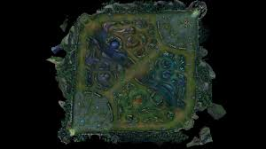
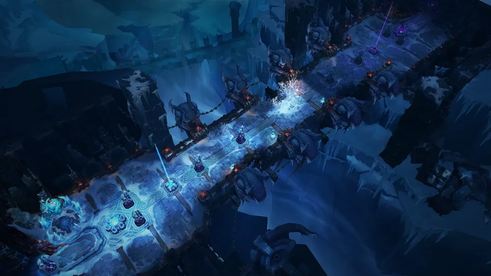

게임 이름 : 리그오브레전드
요약 설명
5명의 플레이어가 각자 다른 포지션에서 성장을 통해 아이템과 레벨을 올려 상대의 기지를 파괴하는 MOBA 장르의 게임
공식 시스템 요구 사항
| 구분 | 최소 사양 | 권장 사양 |
|---|---|---|
| 운영체제 | Windows 10 정품 (x64) | Windows 11 정품 (x64) |
| CPU | Intel: Core i3-530 AMD: A6-3650 ARM: 미지원 |
Intel: Core i5-3300 AMD: Ryzen 3 1200 ARM: 미지원 |
| CPU 기능 | SSE2 | SSE4 |
| 메모리(RAM) | 2 GB | 4 GB |
| 여유 저장 공간 | HDD 16GB 이상 | SSD 16GB 이상 |
| 그래픽 카드 |
NVidia: GeForce 9600GT AMD: HD 6570 Intel: Intel HD 4600 내장 그래픽 (비디오 메모리 1GB 이상) |
NVidia: GeForce 560 AMD: HD 6950 Intel: Intel UHD 630 내장 그래픽 (비디오 메모리 2GB 이상) |
| 그래픽 카드 기능 | 다이렉트 X 10급 하드웨어 | 다이렉트 X 11급 하드웨어 |
| 권장 그래픽 설정 | 해상도: 1024x768, 품질: 낮음 | 해상도: 1920x1080, 품질: 높음 |
리그오브레전드 게임 모드 종류
1. 일반 게임
기본적으로 비공개 선택으로 5 vs 5 형식의 게임 진행
이전에는 챔피언 선택 화면에서 포지션, 챔피언, 룬, 스펠 등을 팀원들과 상의 후 지정했었지만
최근에 진행된 업데이트로 게임 큐를 잡기 이전에 주포지션/보조 포지션, 챔피언, 룬, 스펠 등을 미리 정한 뒤
게임을 돌려서 게임 수락을 누르면 자동으로 게임을 진행하는 형식으로 변경되었다.
2. 개인/2인 랭크 게임
개인 혹은 2인 듀오로 게임을 할 수 있는 랭크이고 다른 이름으로 솔랭이라고도 불린다.
일반 게임과는 다르게 드래프트 형식으로 진행되며 챔피언 선택 이전에 주포지션과 보조 포지션을 지정하고 게임 큐를 돌린다.
챔피언 선택 화면에 들어가면 본인이 미리 지정한 주포지션과 보조 포지션 중에서 한 포지션을 지정받게 된다.
그 이후 일반 게임과 다르게 챔피언 선택 화면에서 챔피언, 룬, 스펠 등을 지정할 수 있고 상대방의 픽 역시 확인이 가능하다.
또한 개인/2인 랭크는 아이언, 브론즈, 실버, 골드, 플래티넘, 에메랄드, 다이아몬드, 마스터, 그랜드 마스터, 챌린저 순서의 티어를 가지고 있다.
각각의 티어는 총 4개로 나뉘어져 있으며, 마스터 이상의 티어에 도달했을 경우에서부터는 일정 점수 커트 라인으로 티어가 나뉘어진다.
프로 연습생이나 프로 선수들을 발굴해내는 수단으로 가장 많이 사용되고 또한 일반 사람들 사이에서도 실력을 증명하는 용도로 사용되는 게임 모드이다.
3. 자유 랭크 게임
1~3인, 혹은 5인으로 팀을 만들어서 게임이 가능한 랭크 게임 형식으로, 4인 파티를 제외하고는 모든 팀 구성이 가능한 게임 모드이다.
기존에는 개인/2인 랭크 게임과 같이 대리를 막기 위해서 너무 큰 티어 차이가 날 경우 매칭을 돌릴 수 없도록 했었다.
하지만 개인/2인 랭크 게임에 비해 인기가 적어 패치를 통해 파티원들의 티어 차이 제한을 없애주어 단순히 친구들과 파티를 맺어 즐겁게 랭크 게임을 하기 위한 용도로 사용되기 시작했다.
4. 칼바람 나락
얼어붙은 땅, 좁은 다리 위에서 각 소환사마다 무작위로 지정된 챔피언을 지정받아서 5 vs 5 형식으로 전투가 벌어지는 게임 모드이다.
일반 게임, 개인/2인 랭크 게임, 자유 랭크 게임과는 다르게 중립 지역 없이 하나의 공격로를 통해서 게임을 진행하는 게임 모드이다.
따라서 게임 시작부터 게임 종료까지 전투와 대치 상태의 중요성이 매우 높은 게임 모드이며 평균 게임 시간이 10~20분 내외로 짧은 게임 플레이 타임을 가지고 있다.
5. 전략적 팀 전투
전략적 팀 전투는 리그오브레전드 게임 챔피언들을 기반으로 팀 구성 실력을 시험하는 라운드 기반 전략 게임 모드이다.
8명의 소환사가 플레이하며 챔피언을 선택하고 배치하며 최고의 전략을 세워서 승리를 쟁취하는 난투전 방식의 게임 모드이다.
전략적 팀 전투의 경우 일반 게임, 랭크 게임, 초고속 모드, 더블업(실험실)과 가끔 출시되는 특별 게임 모드가 있다.
위의 소환사의 협곡에서 플레이하는 게임 모드와 칼바람 나락과는 다르게 휴대폰, 태블릿 등의 기기로도 플레이가 가능하다.